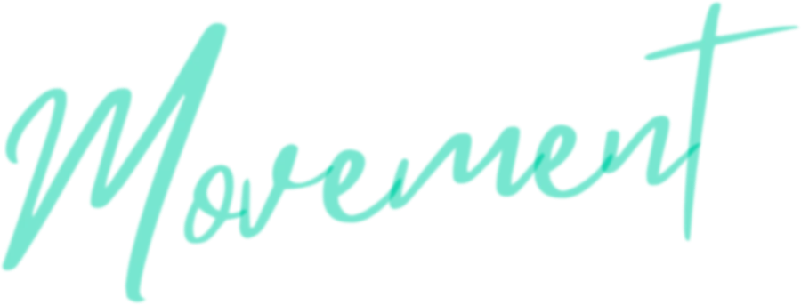
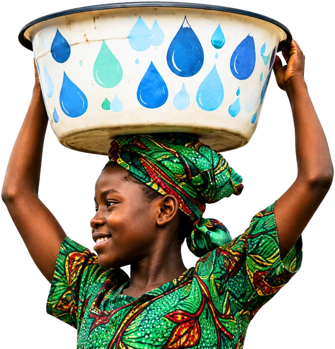
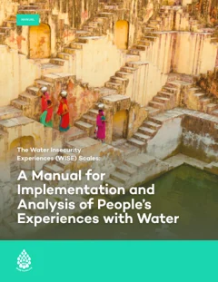
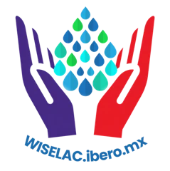
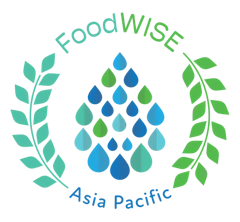
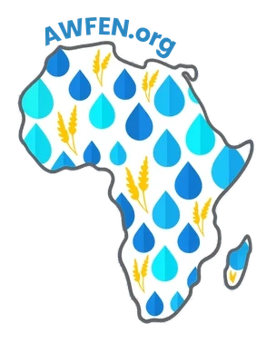
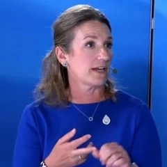
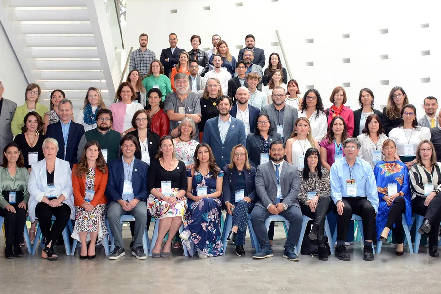
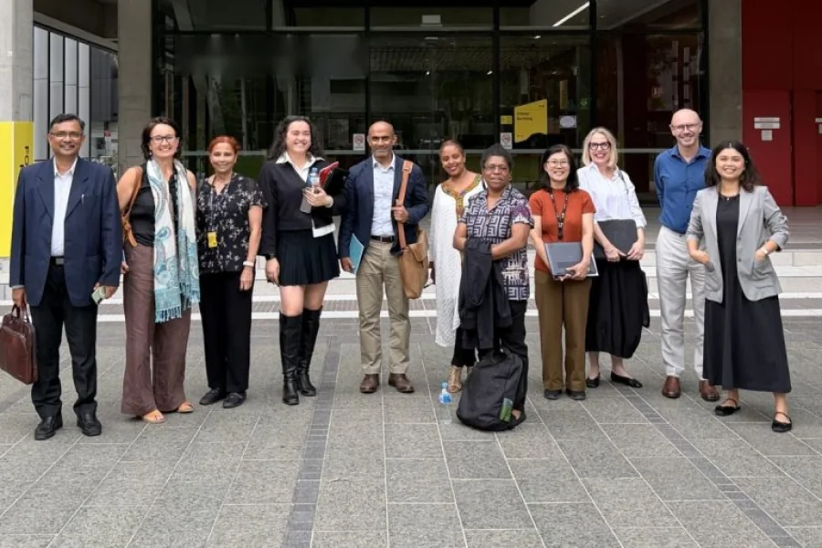
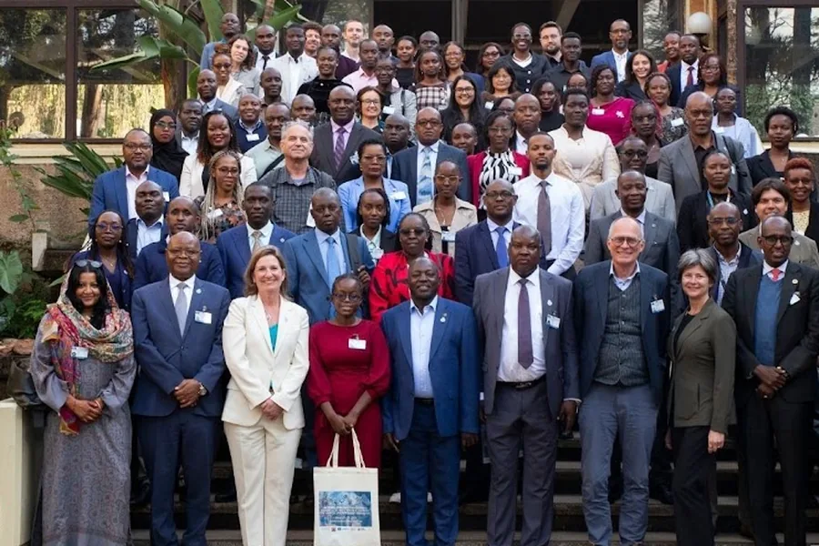

Join the WISE Scales

Bring the human voice to your water conversations.

Here’s how you can join the movement

Use the manual
How to administer, score and interpret the WISE Scales, step by step. Available in four languages.
Take the course
The WISE Scales Water Course from the United Nations University Institute for Water, Environment and Health builds hands-on skill in administering, scoring, and interpreting the scales.



Join the networks
Regional communities using WISE data to drive change.
Use WISE data
Datasets from WISE Scales surveys will be available to download here.
Coming December 2026

Follow Sera Young
News, talks and new research from WISE Lead Prof. Sera Young.
Join the networks
Connect with the regional communities already using WISE data to drive change.

WISE Latin America & Caribbean Network (WISE-LAC) (opens in new tab)
Established September 2023, Mexico City

FoodWISE Asia-Pacific Network (FoodWISE-AP) (opens in new tab)
Established September 2025, Sydney

Africa Water & Food Experiences Network (AWFEN) (opens in new tab)
Established May 2026, Nairobi
Be in touch
We are always happy to hear from you. You don’t need to be in touch to use the open-access WISE Scales, but you might want to reach out if:
- You have any questions about scale implementation or data analysis
- You would like access to the nationally representative data on water insecurity experiences
- You have ideas for additional adventures in water (in)security
- You have translations or implementation experiences to share
Northwestern University
2001 Sheridan Avenue
Evanston, Illinois 60208 USA
For media
Reporting on water insecurity?
The WISE Scales have measured water insecurity across 100 countries and counting. We’re glad to help with data, interviews and background.